本报告由仓内工具从一次真实捕获生成，声明上限 M5_HEADLESS_EVIDENCED。 人工体验门（UX-12）保持 HUMAN_NOT_RUN；本报告不构成 Gate D4.2、V1-P0、V1-Full 或 M6 的任何结论。
74dd5689829109da9e474833c745d05974542c02migration/m2.2-coordinator-persistence304c89134fdf9f834f7d69e3f4d5c89a68044c60dirty=0e70d9d93c7bebe3d634ff2caa6f7a738cdde59d3M5_HEADLESS_EVIDENCEDheadless,muted,no-window,no-focus-steal,no-network,no-payment| Case | 标题 | 状态 | 断言数 | 未通过的断言 | 证据 |
|---|---|---|---|---|---|
PF-01 |
120 clip 四类操作各 100 样本 p95≤100ms | 通过 | 4 | — | cases/PF-01.json |
PF-02 |
三路真实 proxy 播放/切焦，无三路同时出声 | 通过 | 4 | — | cases/PF-02.json |
PF-03 |
冷/热重开数据一致，首帧/内存/媒体关联记录 | 通过 | 4 | — | cases/PF-03.json |
UX-01 |
想法草稿可编辑，打开真实 source→target 映射 | 通过 | 4 | — | cases/UX-01.json |
UX-02 |
关闭重开后 projection/revision/history 可重建 | 通过 | 2 | — | cases/UX-02.json |
UX-03 |
章节/镜头/时间码定位同一 target clip 与范围，并显示唯一 source shot lineage | 通过 | 3 | — | cases/UX-03.json |
UX-04 |
语义结果同时带 clip 与半开范围；无数据时诚实 blocked | 通过 | 2 | — | cases/UX-04.json |
UX-05 |
原生 StudioHost bridge 让 navigator/player/timeline 共享 selection/clock/snapshot | 通过 | 3 | — | cases/UX-05.json |
UX-06 |
帧↔seconds 使用冻结 rational time model；定位不改变 source | 通过 | 3 | — | cases/UX-06.json |
UX-07 |
录制 D4.1 comparison 有原始 audit/lineage；三路 proxy 是真实 media events | 通过 | 4 | — | cases/UX-07.json |
UX-08 |
能力类别来自 server capabilities；Gateway 对未支持 native write 同步 disabled + 422 | 通过 | 2 | — | cases/UX-08.json |
UX-09 |
materialize→impact→confirm→adopt；成功 +1，失败 0 | 通过 | 4 | — | cases/UX-09.json |
UX-10 |
同页原生选择/预览 + 受控 adopt/history；undo/redo 只生成意图；恢复 +1 | 通过 | 4 | — | cases/UX-10.json |
UX-11 |
键盘、焦点、文本状态、axe、reduced motion、主题 | 通过 | 7 | — | cases/UX-11.json |
本阶段架构由 Archify showcase 模式生成并通过 9/9 结构与组合检查。图中把 M5 的 fixture/proxy 与 M6 正式生产渲染明确分离，并展示 Panel/StudioHost/Gateway、受控写服务、 ProjectCoordinator、EnginePort、素材化 worker、SQLite 与工程文件系统的真实边界。
| 名称 | 命令 | 退出码 | 原始输出 |
|---|---|---|---|
acceptance-report |
node tools/m5-acceptance-report.mjs docs/evidence/WAVE3/M5/captures/74dd5689829109da9e474833c745d05974542c02 docs/evidence/WAVE3/M5/acceptance-report.html |
acceptance-report.txt |
|
build |
corepack pnpm build |
0 | build.txt |
check |
corepack pnpm check |
0 | check.txt |
contracts |
corepack pnpm test:contracts |
0 | contracts.txt |
credential-scan |
NARRALENS_SECRET_SCAN_OUT=docs/evidence/WAVE3/M5/captures/74dd5689829109da9e474833c745d05974542c02/credential-scan.json corepack pnpm exec tsx tools/secret-scan.ts |
0 | credential-scan.txt |
m2.1 |
corepack pnpm test:m2.1 |
0 | m2.1.txt |
m5-headless |
NARRALENS_M5_EVIDENCE_ROOT=docs/evidence/WAVE3/M5/captures/74dd5689829109da9e474833c745d05974542c02 corepack pnpm test:m5:headless |
0 | m5-headless.txt |
m5 |
corepack pnpm test:m5 |
0 | m5.txt |
studio-seam-probe |
corepack pnpm exec tsx tools/m5-studio-seam-probe.ts |
0 | studio-seam-probe.txt |
typecheck |
corepack pnpm exec tsc --noEmit |
0 | typecheck.txt |
wave2-fitness |
corepack pnpm test:wave2:fitness |
0 | wave2-fitness.txt |
wave2-m3 |
corepack pnpm test:wave2:m3 |
0 | wave2-m3.txt |
wave2-m4a |
corepack pnpm test:wave2:m4a |
0 | wave2-m4a.txt |
wave2-m4b |
corepack pnpm test:wave2:m4b |
0 | wave2-m4b.txt |
wave2-m4c |
corepack pnpm test:wave2:m4c |
0 | wave2-m4c.txt |
wave2-w2.0 |
corepack pnpm test:wave2:w2.0 |
0 | wave2-w2.0.txt |
截图只在每个 case 的 Studio 与 Narralens 面板仍处于成功态时捕获；环境关闭后的 “Studio connection lost”页面不会被当作成功证据。路径覆盖：打开已迁移工程 → 定位镜头/章节 → 读取原生时间线 → 回放已录制提案 → 素材化 → impact/锁确认 → 采用 → history 恢复。
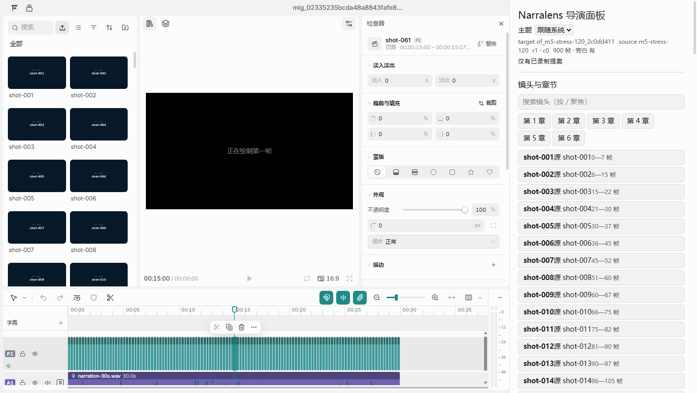
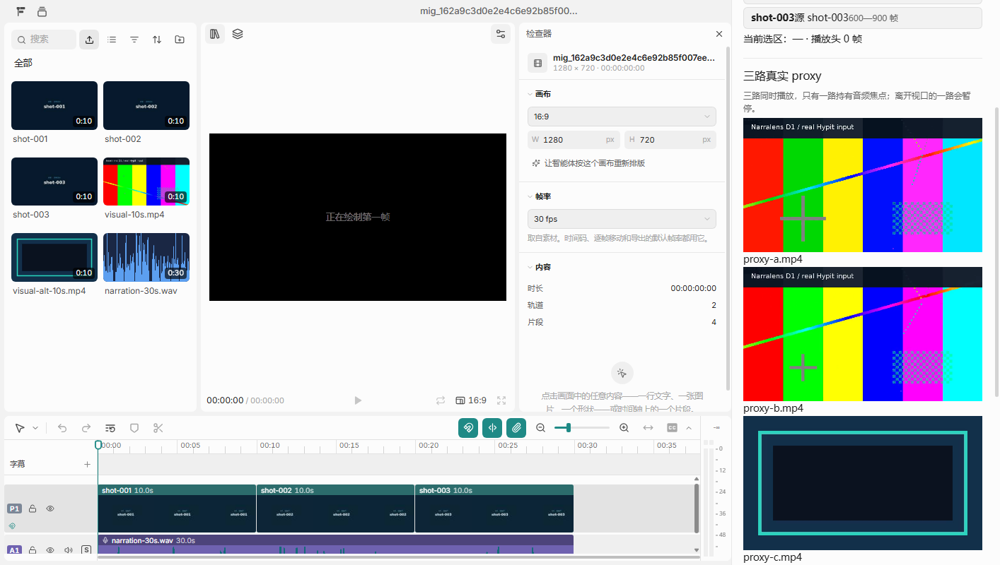
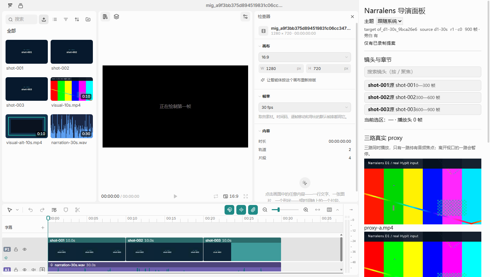
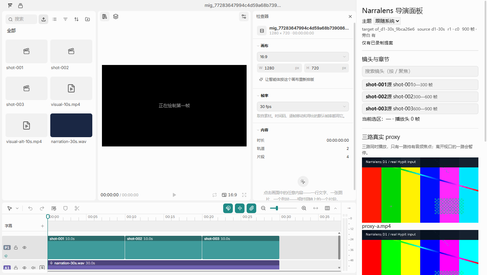
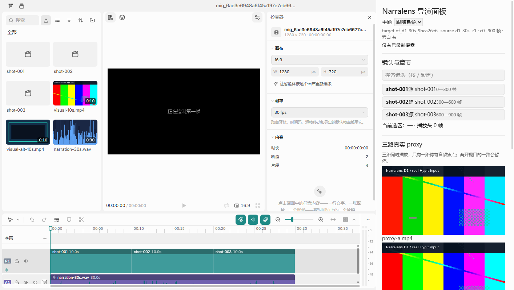
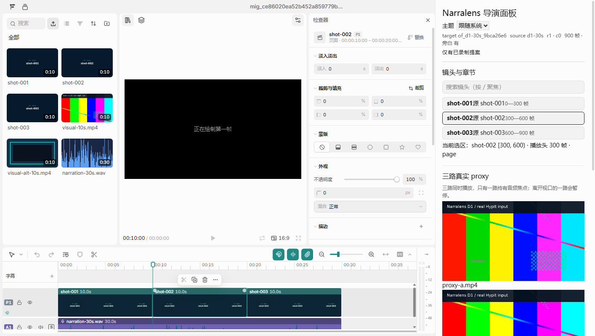
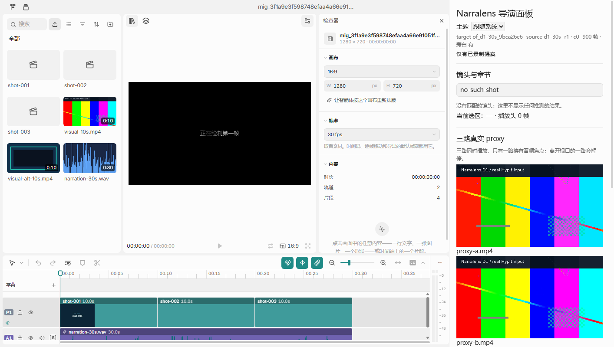
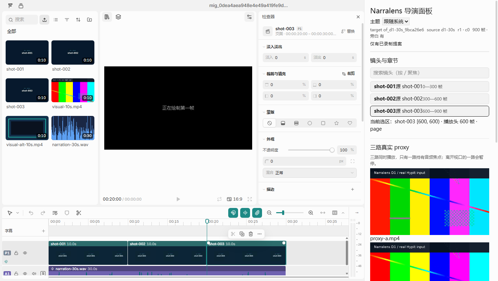
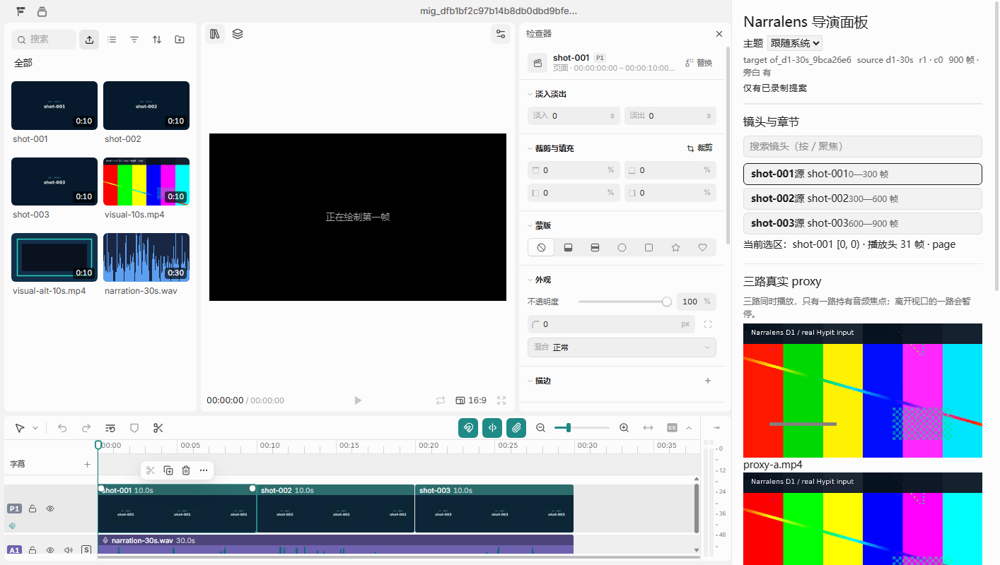
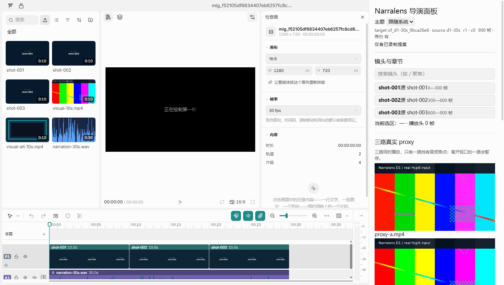
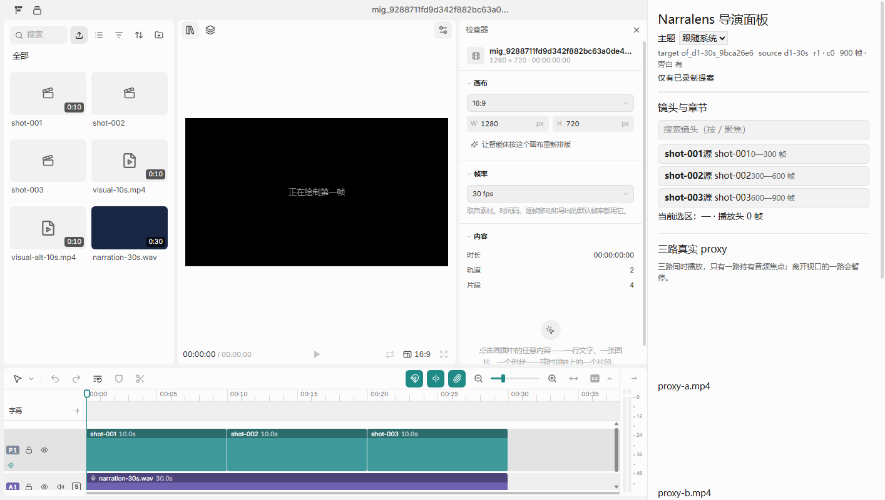
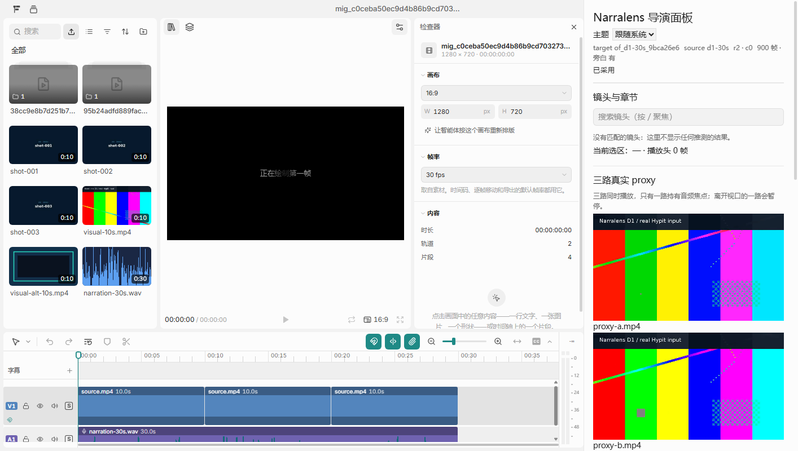
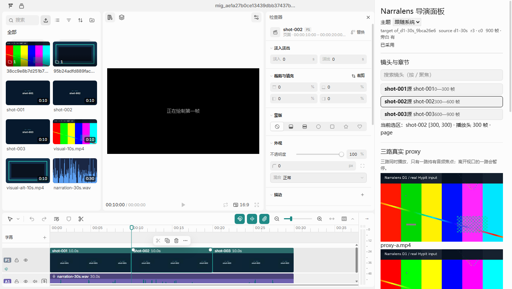
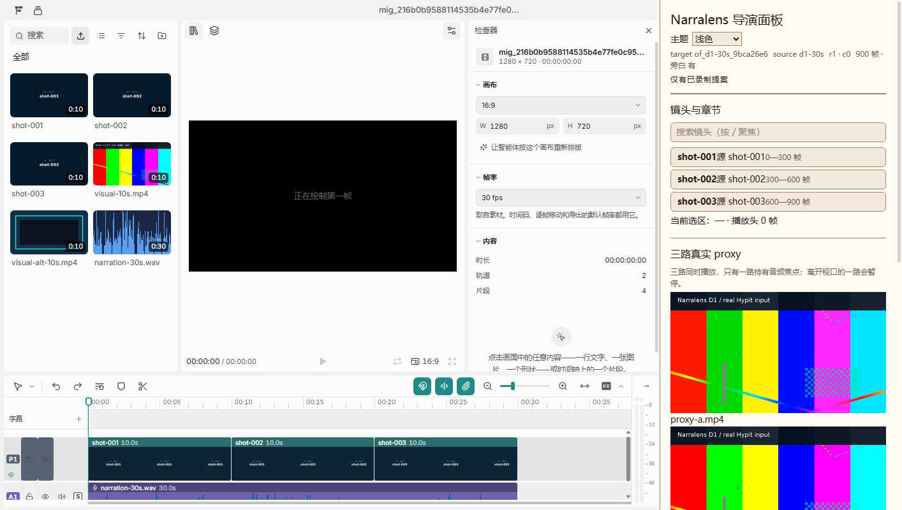
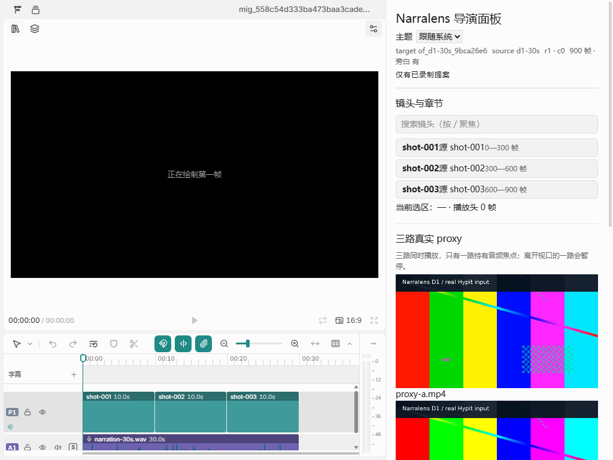
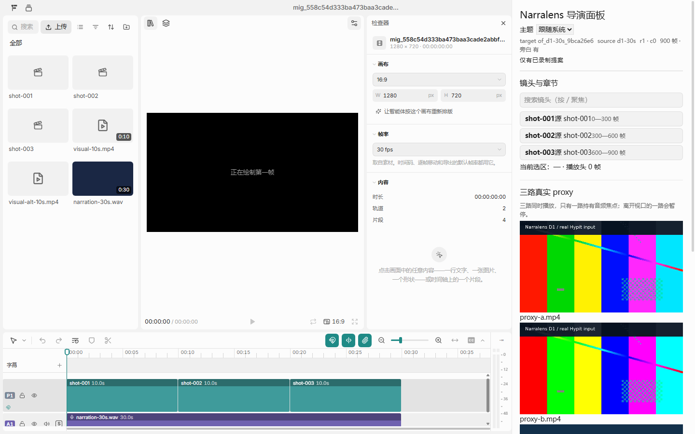
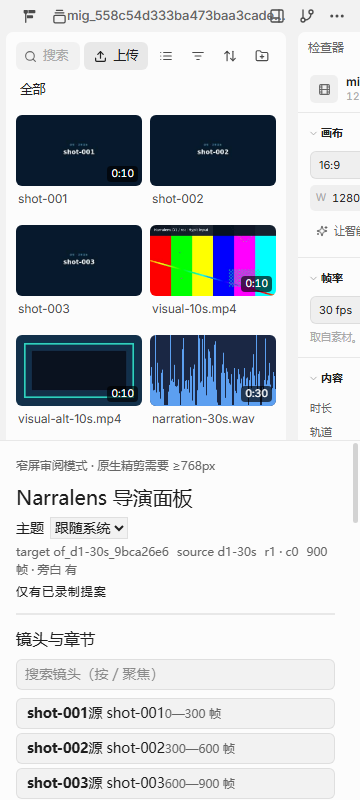
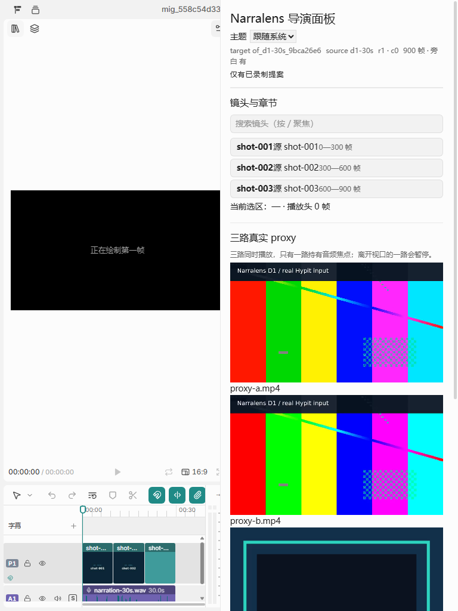
Chrome/156.0.8078.80/mnt/c/Program Files/Google/Chrome/Application/chrome.exehttp://127.0.0.1:13835/mnt/c/Users/Public/narralens-m5-chrome-hsd22Qhttp://127.0.0.1:57133{"device_pixel_ratio":2,"inner_width":707,"inner_height":400,"document_width":707,"document_height":400,"overflow_x":false,"zoom_level":3.8017840169239308}| 种类 | 文件 | SHA256 | 字节 | 解码帧数 | 生成命令 |
|---|---|---|---|---|---|
| proxy | proxy-a.mp4 |
168a7f899d34cbf5f60be60e36bf6e007ed3da3d8f549a918754f123c9430b98 |
2946391 | 300 | ffmpeg -y -v error -i /mnt/c/workspace/videoworkline/Narralens/fixtures/d1-30s/assets/generated/visual-10s.mp4 -t 10 -vf scale=1280:720,fps=30 -c:v libx264 -preset veryfast -pix_fmt yuv420p -an -metadata title=narralens-m5-proxy-1 /mnt/c/workspace/videoworkline/Narralens/var/m5-fixtures/proxy-a.mp4 |
| proxy | proxy-b.mp4 |
55e65de352c810524d98c200f8878e8c78d6ad43fba514c6a24cb0cda4bc0d8c |
760094 | 300 | ffmpeg -y -v error -i /mnt/c/workspace/videoworkline/Narralens/fixtures/d1-30s/assets/generated/visual-10s.mp4 -t 10 -vf scale=854:480,fps=30 -c:v libx264 -preset veryfast -pix_fmt yuv420p -an -metadata title=narralens-m5-proxy-2 /mnt/c/workspace/videoworkline/Narralens/var/m5-fixtures/proxy-b.mp4 |
| proxy | proxy-c.mp4 |
e39e84d77e39c30c9953d320c36894f6e32db8d00a40602e52d6dd8b2f7fce78 |
11893 | 300 | ffmpeg -y -v error -i /mnt/c/workspace/videoworkline/Narralens/fixtures/d1-30s/assets/generated/visual-alt-10s.mp4 -t 10 -vf scale=640:360,fps=30 -c:v libx264 -preset veryfast -pix_fmt yuv420p -an -metadata title=narralens-m5-proxy-3 /mnt/c/workspace/videoworkline/Narralens/var/m5-fixtures/proxy-c.mp4 |
| system-film | system-3min.mp4 |
d8f6ee8114ea62e67d203a252c59975ed2da29018208cc0159a8af007e0935e4 |
6491119 | 5400 | ffmpeg -y -v error -i /mnt/c/workspace/videoworkline/Narralens/var/m5-fixtures/proxy-a.mp4 -filter_complex [0:v]trim=start=0.00:duration=7.50,setpts=PTS-STARTPTS,scale=640:360:force_original_aspect_ratio=decrease[v0];[0:v]trim=start=0.25:duration=7.50,setpts=PTS-STARTPTS,scale=640:360:force_original_aspect_ratio=decrease[v1];[0:v]trim=start=0.50:duration=7.50,setpts=PTS-STARTPTS,scale=640:360:force_original_aspect_ratio=decrease[v2];[0:v]trim=start=0.00:duration=7.50,setpts=PTS-STARTPTS,scale=640:360:force_original_aspect_ratio=decrease[v3];[0:v]trim=start=0.25:duration=7.50,setpts=PTS-STARTPTS,scale=640:360:force_original_aspect_ratio=decrease[v4];[0:v]trim=start=0.50:duration=7.50,setpts=PTS-STARTPTS,scale=640:360:force_original_aspect_ratio=decrease[v5];[0:v]trim=start=0.00:duration=7.50,setpts=PTS-STARTPTS,scale=640:360:force_original_aspect_ratio=decrease[v6];[0:v]trim=start=0.25:duration=7.50,setpts=PTS-STARTPTS,scale=640:360:force_original_aspect_ratio=decrease[v7];[0:v]trim=start=0.50:duration=7.50,setpts=PTS-STARTPTS,scale=640:360:force_original_aspect_ratio=decrease[v8];[0:v]trim=start=0.00:duration=7.50,setpts=PTS-STARTPTS,scale=640:360:force_original_aspect_ratio=decrease[v9];[0:v]trim=start=0.25:duration=7.50,setpts=PTS-STARTPTS,scale=640:360:force_original_aspect_ratio=decrease[v10];[0:v]trim=start=0.50:duration=7.50,setpts=PTS-STARTPTS,scale=640:360:force_original_aspect_ratio=decrease[v11];[0:v]trim=start=0.00:duration=7.50,setpts=PTS-STARTPTS,scale=640:360:force_original_aspect_ratio=decrease[v12];[0:v]trim=start=0.25:duration=7.50,setpts=PTS-STARTPTS,scale=640:360:force_original_aspect_ratio=decrease[v13];[0:v]trim=start=0.50:duration=7.50,setpts=PTS-STARTPTS,scale=640:360:force_original_aspect_ratio=decrease[v14];[0:v]trim=start=0.00:duration=7.50,setpts=PTS-STARTPTS,scale=640:360:force_original_aspect_ratio=decrease[v15];[0:v]trim=start=0.25:duration=7.50,setpts=PTS-STARTPTS,scale=640:360:force_original_aspect_ratio=decrease[v16];[0:v]trim=start=0.50:duration=7.50,setpts=PTS-STARTPTS,scale=640:360:force_original_aspect_ratio=decrease[v17];[0:v]trim=start=0.00:duration=7.50,setpts=PTS-STARTPTS,scale=640:360:force_original_aspect_ratio=decrease[v18];[0:v]trim=start=0.25:duration=7.50,setpts=PTS-STARTPTS,scale=640:360:force_original_aspect_ratio=decrease[v19];[0:v]trim=start=0.50:duration=7.50,setpts=PTS-STARTPTS,scale=640:360:force_original_aspect_ratio=decrease[v20];[0:v]trim=start=0.00:duration=7.50,setpts=PTS-STARTPTS,scale=640:360:force_original_aspect_ratio=decrease[v21];[0:v]trim=start=0.25:duration=7.50,setpts=PTS-STARTPTS,scale=640:360:force_original_aspect_ratio=decrease[v22];[0:v]trim=start=0.50:duration=7.50,setpts=PTS-STARTPTS,scale=640:360:force_original_aspect_ratio=decrease[v23];[v0][v1][v2][v3][v4][v5][v6][v7][v8][v9][v10][v11][v12][v13][v14][v15][v16][v17][v18][v19][v20][v21][v22][v23]concat=n=24:v=1:a=0[out] -map [out] -c:v libx264 -preset veryfast -pix_fmt yuv420p -r 30 -an /mnt/c/workspace/videoworkline/Narralens/var/m5-fixtures/system-3min.mp4 |
| stress-film | stress-120clips.mp4 |
9b7734d628297f163b995958c3bf97919d1fe93d05911f3ebec71f80ed71e130 |
1819226 | 1800 | ffmpeg -y -v error -i /mnt/c/workspace/videoworkline/Narralens/var/m5-fixtures/proxy-b.mp4 -filter_complex [0:v]trim=start=0.00:duration=0.50,setpts=PTS-STARTPTS,scale=640:360:force_original_aspect_ratio=decrease[v0];[0:v]trim=start=0.25:duration=0.50,setpts=PTS-STARTPTS,scale=640:360:force_original_aspect_ratio=decrease[v1];[0:v]trim=start=0.50:duration=0.50,setpts=PTS-STARTPTS,scale=640:360:force_original_aspect_ratio=decrease[v2];[0:v]trim=start=0.00:duration=0.50,setpts=PTS-STARTPTS,scale=640:360:force_original_aspect_ratio=decrease[v3];[0:v]trim=start=0.25:duration=0.50,setpts=PTS-STARTPTS,scale=640:360:force_original_aspect_ratio=decrease[v4];[0:v]trim=start=0.50:duration=0.50,setpts=PTS-STARTPTS,scale=640:360:force_original_aspect_ratio=decrease[v5];[0:v]trim=start=0.00:duration=0.50,setpts=PTS-STARTPTS,scale=640:360:force_original_aspect_ratio=decrease[v6];[0:v]trim=start=0.25:duration=0.50,setpts=PTS-STARTPTS,scale=640:360:force_original_aspect_ratio=decrease[v7];[0:v]trim=start=0.50:duration=0.50,setpts=PTS-STARTPTS,scale=640:360:force_original_aspect_ratio=decrease[v8];[0:v]trim=start=0.00:duration=0.50,setpts=PTS-STARTPTS,scale=640:360:force_original_aspect_ratio=decrease[v9];[0:v]trim=start=0.25:duration=0.50,setpts=PTS-STARTPTS,scale=640:360:force_original_aspect_ratio=decrease[v10];[0:v]trim=start=0.50:duration=0.50,setpts=PTS-STARTPTS,scale=640:360:force_original_aspect_ratio=decrease[v11];[0:v]trim=start=0.00:duration=0.50,setpts=PTS-STARTPTS,scale=640:360:force_original_aspect_ratio=decrease[v12];[0:v]trim=start=0.25:duration=0.50,setpts=PTS-STARTPTS,scale=640:360:force_original_aspect_ratio=decrease[v13];[0:v]trim=start=0.50:duration=0.50,setpts=PTS-STARTPTS,scale=640:360:force_original_aspect_ratio=decrease[v14];[0:v]trim=start=0.00:duration=0.50,setpts=PTS-STARTPTS,scale=640:360:force_original_aspect_ratio=decrease[v15];[0:v]trim=start=0.25:duration=0.50,setpts=PTS-STARTPTS,scale=640:360:force_original_aspect_ratio=decrease[v16];[0:v]trim=start=0.50:duration=0.50,setpts=PTS-STARTPTS,scale=640:360:force_original_aspect_ratio=decrease[v17];[0:v]trim=start=0.00:duration=0.50,setpts=PTS-STARTPTS,scale=640:360:force_original_aspect_ratio=decrease[v18];[0:v]trim=start=0.25:duration=0.50,setpts=PTS-STARTPTS,scale=640:360:force_original_aspect_ratio=decrease[v19];[0:v]trim=start=0.50:duration=0.50,setpts=PTS-STARTPTS,scale=640:360:force_original_aspect_ratio=decrease[v20];[0:v]trim=start=0.00:duration=0.50,setpts=PTS-STARTPTS,scale=640:360:force_original_aspect_ratio=decrease[v21];[0:v]trim=start=0.25:duration=0.50,setpts=PTS-STARTPTS,scale=640:360:force_original_aspect_ratio=decrease[v22];[0:v]trim=start=0.50:duration=0.50,setpts=PTS-STARTPTS,scale=640:360:force_original_aspect_ratio=decrease[v23];[0:v]trim=start=0.00:duration=0.50,setpts=PTS-STARTPTS,scale=640:360:force_original_aspect_ratio=decrease[v24];[0:v]trim=start=0.25:duration=0.50,setpts=PTS-STARTPTS,scale=640:360:force_original_aspect_ratio=decrease[v25];[0:v]trim=start=0.50:duration=0.50,setpts=PTS-STARTPTS,scale=640:360:force_original_aspect_ratio=decrease[v26];[0:v]trim=start=0.00:duration=0.50,setpts=PTS-STARTPTS,scale=640:360:force_original_aspect_ratio=decrease[v27];[0:v]trim=start=0.25:duration=0.50,setpts=PTS-STARTPTS,scale=640:360:force_original_aspect_ratio=decrease[v28];[0:v]trim=start=0.50:duration=0.50,setpts=PTS-STARTPTS,scale=640:360:force_original_aspect_ratio=decrease[v29];[0:v]trim=start=0.00:duration=0.50,setpts=PTS-STARTPTS,scale=640:360:force_original_aspect_ratio=decrease[v30];[0:v]trim=start=0.25:duration=0.50,setpts=PTS-STARTPTS,scale=640:360:force_original_aspect_ratio=decrease[v31];[0:v]trim=start=0.50:duration=0.50,setpts=PTS-STARTPTS,scale=640:360:force_original_aspect_ratio=decrease[v32];[0:v]trim=start=0.00:duration=0.50,setpts=PTS-STARTPTS,scale=640:360:force_original_aspect_ratio=decrease[v33];[0:v]trim=start=0.25:duration=0.50,setpts=PTS-STARTPTS,scale=640:360:force_original_aspect_ratio=decrease[v34];[0:v]trim=start=0.50:duration=0.50,setpts=PTS-STARTPTS,scale=640:360:force_original_aspect_ratio=decrease[v35];[0:v]trim=start=0.00:duration=0.50,setpts=PTS-STARTPTS,scale=640:360:force_original_aspect_ratio=decrease[v36];[0:v]trim=start=0.25:duration=0.50,setpts=PTS-STARTPTS,scale=640:360:force_original_aspect_ratio=decrease[v37];[0:v]trim=start=0.50:duration=0.50,setpts=PTS-STARTPTS,scale=640:360:force_original_aspect_ratio=decrease[v38];[0:v]trim=start=0.00:duration=0.50,setpts=PTS-STARTPTS,scale=640:360:force_original_aspect_ratio=decrease[v39];[0:v]trim=start=0.25:duration=0.50,setpts=PTS-STARTPTS,scale=640:360:force_original_aspect_ratio=decrease[v40];[0:v]trim=start=0.50:duration=0.50,setpts=PTS-STARTPTS,scale=640:360:force_original_aspect_ratio=decrease[v41];[0:v]trim=start=0.00:duration=0.50,setpts=PTS-STARTPTS,scale=640:360:force_original_aspect_ratio=decrease[v42];[0:v]trim=start=0.25:duration=0.50,setpts=PTS-STARTPTS,scale=640:360:force_original_aspect_ratio=decrease[v43];[0:v]trim=start=0.50:duration=0.50,setpts=PTS-STARTPTS,scale=640:360:force_original_aspect_ratio=decrease[v44];[0:v]trim=start=0.00:duration=0.50,setpts=PTS-STARTPTS,scale=640:360:force_original_aspect_ratio=decrease[v45];[0:v]trim=start=0.25:duration=0.50,setpts=PTS-STARTPTS,scale=640:360:force_original_aspect_ratio=decrease[v46];[0:v]trim=start=0.50:duration=0.50,setpts=PTS-STARTPTS,scale=640:360:force_original_aspect_ratio=decrease[v47];[0:v]trim=start=0.00:duration=0.50,setpts=PTS-STARTPTS,scale=640:360:force_original_aspect_ratio=decrease[v48];[0:v]trim=start=0.25:duration=0.50,setpts=PTS-STARTPTS,scale=640:360:force_original_aspect_ratio=decrease[v49];[0:v]trim=start=0.50:duration=0.50,setpts=PTS-STARTPTS,scale=640:360:force_original_aspect_ratio=decrease[v50];[0:v]trim=start=0.00:duration=0.50,setpts=PTS-STARTPTS,scale=640:360:force_original_aspect_ratio=decrease[v51];[0:v]trim=start=0.25:duration=0.50,setpts=PTS-STARTPTS,scale=640:360:force_original_aspect_ratio=decrease[v52];[0:v]trim=start=0.50:duration=0.50,setpts=PTS-STARTPTS,scale=640:360:force_original_aspect_ratio=decrease[v53];[0:v]trim=start=0.00:duration=0.50,setpts=PTS-STARTPTS,scale=640:360:force_original_aspect_ratio=decrease[v54];[0:v]trim=start=0.25:duration=0.50,setpts=PTS-STARTPTS,scale=640:360:force_original_aspect_ratio=decrease[v55];[0:v]trim=start=0.50:duration=0.50,setpts=PTS-STARTPTS,scale=640:360:force_original_aspect_ratio=decrease[v56];[0:v]trim=start=0.00:duration=0.50,setpts=PTS-STARTPTS,scale=640:360:force_original_aspect_ratio=decrease[v57];[0:v]trim=start=0.25:duration=0.50,setpts=PTS-STARTPTS,scale=640:360:force_original_aspect_ratio=decrease[v58];[0:v]trim=start=0.50:duration=0.50,setpts=PTS-STARTPTS,scale=640:360:force_original_aspect_ratio=decrease[v59];[0:v]trim=start=0.00:duration=0.50,setpts=PTS-STARTPTS,scale=640:360:force_original_aspect_ratio=decrease[v60];[0:v]trim=start=0.25:duration=0.50,setpts=PTS-STARTPTS,scale=640:360:force_original_aspect_ratio=decrease[v61];[0:v]trim=start=0.50:duration=0.50,setpts=PTS-STARTPTS,scale=640:360:force_original_aspect_ratio=decrease[v62];[0:v]trim=start=0.00:duration=0.50,setpts=PTS-STARTPTS,scale=640:360:force_original_aspect_ratio=decrease[v63];[0:v]trim=start=0.25:duration=0.50,setpts=PTS-STARTPTS,scale=640:360:force_original_aspect_ratio=decrease[v64];[0:v]trim=start=0.50:duration=0.50,setpts=PTS-STARTPTS,scale=640:360:force_original_aspect_ratio=decrease[v65];[0:v]trim=start=0.00:duration=0.50,setpts=PTS-STARTPTS,scale=640:360:force_original_aspect_ratio=decrease[v66];[0:v]trim=start=0.25:duration=0.50,setpts=PTS-STARTPTS,scale=640:360:force_original_aspect_ratio=decrease[v67];[0:v]trim=start=0.50:duration=0.50,setpts=PTS-STARTPTS,scale=640:360:force_original_aspect_ratio=decrease[v68];[0:v]trim=start=0.00:duration=0.50,setpts=PTS-STARTPTS,scale=640:360:force_original_aspect_ratio=decrease[v69];[0:v]trim=start=0.25:duration=0.50,setpts=PTS-STARTPTS,scale=640:360:force_original_aspect_ratio=decrease[v70];[0:v]trim=start=0.50:duration=0.50,setpts=PTS-STARTPTS,scale=640:360:force_original_aspect_ratio=decrease[v71];[0:v]trim=start=0.00:duration=0.50,setpts=PTS-STARTPTS,scale=640:360:force_original_aspect_ratio=decrease[v72];[0:v]trim=start=0.25:duration=0.50,setpts=PTS-STARTPTS,scale=640:360:force_original_aspect_ratio=decrease[v73];[0:v]trim=start=0.50:duration=0.50,setpts=PTS-STARTPTS,scale=640:360:force_original_aspect_ratio=decrease[v74];[0:v]trim=start=0.00:duration=0.50,setpts=PTS-STARTPTS,scale=640:360:force_original_aspect_ratio=decrease[v75];[0:v]trim=start=0.25:duration=0.50,setpts=PTS-STARTPTS,scale=640:360:force_original_aspect_ratio=decrease[v76];[0:v]trim=start=0.50:duration=0.50,setpts=PTS-STARTPTS,scale=640:360:force_original_aspect_ratio=decrease[v77];[0:v]trim=start=0.00:duration=0.50,setpts=PTS-STARTPTS,scale=640:360:force_original_aspect_ratio=decrease[v78];[0:v]trim=start=0.25:duration=0.50,setpts=PTS-STARTPTS,scale=640:360:force_original_aspect_ratio=decrease[v79];[0:v]trim=start=0.50:duration=0.50,setpts=PTS-STARTPTS,scale=640:360:force_original_aspect_ratio=decrease[v80];[0:v]trim=start=0.00:duration=0.50,setpts=PTS-STARTPTS,scale=640:360:force_original_aspect_ratio=decrease[v81];[0:v]trim=start=0.25:duration=0.50,setpts=PTS-STARTPTS,scale=640:360:force_original_aspect_ratio=decrease[v82];[0:v]trim=start=0.50:duration=0.50,setpts=PTS-STARTPTS,scale=640:360:force_original_aspect_ratio=decrease[v83];[0:v]trim=start=0.00:duration=0.50,setpts=PTS-STARTPTS,scale=640:360:force_original_aspect_ratio=decrease[v84];[0:v]trim=start=0.25:duration=0.50,setpts=PTS-STARTPTS,scale=640:360:force_original_aspect_ratio=decrease[v85];[0:v]trim=start=0.50:duration=0.50,setpts=PTS-STARTPTS,scale=640:360:force_original_aspect_ratio=decrease[v86];[0:v]trim=start=0.00:duration=0.50,setpts=PTS-STARTPTS,scale=640:360:force_original_aspect_ratio=decrease[v87];[0:v]trim=start=0.25:duration=0.50,setpts=PTS-STARTPTS,scale=640:360:force_original_aspect_ratio=decrease[v88];[0:v]trim=start=0.50:duration=0.50,setpts=PTS-STARTPTS,scale=640:360:force_original_aspect_ratio=decrease[v89];[0:v]trim=start=0.00:duration=0.50,setpts=PTS-STARTPTS,scale=640:360:force_original_aspect_ratio=decrease[v90];[0:v]trim=start=0.25:duration=0.50,setpts=PTS-STARTPTS,scale=640:360:force_original_aspect_ratio=decrease[v91];[0:v]trim=start=0.50:duration=0.50,setpts=PTS-STARTPTS,scale=640:360:force_original_aspect_ratio=decrease[v92];[0:v]trim=start=0.00:duration=0.50,setpts=PTS-STARTPTS,scale=640:360:force_original_aspect_ratio=decrease[v93];[0:v]trim=start=0.25:duration=0.50,setpts=PTS-STARTPTS,scale=640:360:force_original_aspect_ratio=decrease[v94];[0:v]trim=start=0.50:duration=0.50,setpts=PTS-STARTPTS,scale=640:360:force_original_aspect_ratio=decrease[v95];[0:v]trim=start=0.00:duration=0.50,setpts=PTS-STARTPTS,scale=640:360:force_original_aspect_ratio=decrease[v96];[0:v]trim=start=0.25:duration=0.50,setpts=PTS-STARTPTS,scale=640:360:force_original_aspect_ratio=decrease[v97];[0:v]trim=start=0.50:duration=0.50,setpts=PTS-STARTPTS,scale=640:360:force_original_aspect_ratio=decrease[v98];[0:v]trim=start=0.00:duration=0.50,setpts=PTS-STARTPTS,scale=640:360:force_original_aspect_ratio=decrease[v99];[0:v]trim=start=0.25:duration=0.50,setpts=PTS-STARTPTS,scale=640:360:force_original_aspect_ratio=decrease[v100];[0:v]trim=start=0.50:duration=0.50,setpts=PTS-STARTPTS,scale=640:360:force_original_aspect_ratio=decrease[v101];[0:v]trim=start=0.00:duration=0.50,setpts=PTS-STARTPTS,scale=640:360:force_original_aspect_ratio=decrease[v102];[0:v]trim=start=0.25:duration=0.50,setpts=PTS-STARTPTS,scale=640:360:force_original_aspect_ratio=decrease[v103];[0:v]trim=start=0.50:duration=0.50,setpts=PTS-STARTPTS,scale=640:360:force_original_aspect_ratio=decrease[v104];[0:v]trim=start=0.00:duration=0.50,setpts=PTS-STARTPTS,scale=640:360:force_original_aspect_ratio=decrease[v105];[0:v]trim=start=0.25:duration=0.50,setpts=PTS-STARTPTS,scale=640:360:force_original_aspect_ratio=decrease[v106];[0:v]trim=start=0.50:duration=0.50,setpts=PTS-STARTPTS,scale=640:360:force_original_aspect_ratio=decrease[v107];[0:v]trim=start=0.00:duration=0.50,setpts=PTS-STARTPTS,scale=640:360:force_original_aspect_ratio=decrease[v108];[0:v]trim=start=0.25:duration=0.50,setpts=PTS-STARTPTS,scale=640:360:force_original_aspect_ratio=decrease[v109];[0:v]trim=start=0.50:duration=0.50,setpts=PTS-STARTPTS,scale=640:360:force_original_aspect_ratio=decrease[v110];[0:v]trim=start=0.00:duration=0.50,setpts=PTS-STARTPTS,scale=640:360:force_original_aspect_ratio=decrease[v111];[0:v]trim=start=0.25:duration=0.50,setpts=PTS-STARTPTS,scale=640:360:force_original_aspect_ratio=decrease[v112];[0:v]trim=start=0.50:duration=0.50,setpts=PTS-STARTPTS,scale=640:360:force_original_aspect_ratio=decrease[v113];[0:v]trim=start=0.00:duration=0.50,setpts=PTS-STARTPTS,scale=640:360:force_original_aspect_ratio=decrease[v114];[0:v]trim=start=0.25:duration=0.50,setpts=PTS-STARTPTS,scale=640:360:force_original_aspect_ratio=decrease[v115];[0:v]trim=start=0.50:duration=0.50,setpts=PTS-STARTPTS,scale=640:360:force_original_aspect_ratio=decrease[v116];[0:v]trim=start=0.00:duration=0.50,setpts=PTS-STARTPTS,scale=640:360:force_original_aspect_ratio=decrease[v117];[0:v]trim=start=0.25:duration=0.50,setpts=PTS-STARTPTS,scale=640:360:force_original_aspect_ratio=decrease[v118];[0:v]trim=start=0.50:duration=0.50,setpts=PTS-STARTPTS,scale=640:360:force_original_aspect_ratio=decrease[v119];[v0][v1][v2][v3][v4][v5][v6][v7][v8][v9][v10][v11][v12][v13][v14][v15][v16][v17][v18][v19][v20][v21][v22][v23][v24][v25][v26][v27][v28][v29][v30][v31][v32][v33][v34][v35][v36][v37][v38][v39][v40][v41][v42][v43][v44][v45][v46][v47][v48][v49][v50][v51][v52][v53][v54][v55][v56][v57][v58][v59][v60][v61][v62][v63][v64][v65][v66][v67][v68][v69][v70][v71][v72][v73][v74][v75][v76][v77][v78][v79][v80][v81][v82][v83][v84][v85][v86][v87][v88][v89][v90][v91][v92][v93][v94][v95][v96][v97][v98][v99][v100][v101][v102][v103][v104][v105][v106][v107][v108][v109][v110][v111][v112][v113][v114][v115][v116][v117][v118][v119]concat=n=120:v=1:a=0[out] -map [out] -c:v libx264 -preset veryfast -pix_fmt yuv420p -r 30 -an /mnt/c/workspace/videoworkline/Narralens/var/m5-fixtures/stress-120clips.mp4 |
这些 fixture 只证明系统交互（真实媒体、真实解码、真实帧率），不证明长片内容质量。 120 clip / 6 章是结构压力用例，不是长片质量证据。 素材来自仓库内已验证的 fixtures/d1-30s 媒体，由本地 ffmpeg 确定性合成。
ok=true the Studio seam is present at the pinned upstreampackages/openfilm/studio/server/server.mjsc2da2fcf3b8cab3c6758a8d50a660b9d8d0543b917d9927e52b4cda4f2344a0fpackages/openfilm/studio/ui/src/lib/host.ts84b6b549a80a695d68a0915681b865f0a22c7e49b8533fc5d8d889ef8a966053写路径的前后差异由 tests/m5/locks.test.ts 与 tests/m5/comparison-replay.test.ts 断言：
锁的 CAS 失败为零 lock/outbox 变化，replay 不改变 source/revision/snapshot/ledger。
失败捕获只追加、不覆盖，索引见 docs/evidence/WAVE3/M5/failed-captures.json；
完整性门 tools/m5-evidence-integrity.mjs 会检查每一次失败都在索引中。
四视角内部审查见 docs/evidence/WAVE3/M5/reviews/internal-review.md。
独立外审与人工体验均未进行，本报告不代替它们。
关闭 M5 的 workbench/replay/locks 路由与 Studio Gateway 并恢复旧 NarralensApp 即可回退 UI；
不重置数据库、不删除 Wave 2 表、snapshot 或迁移副本。
HUMAN_NOT_RUN：自动化不得代签人类判断。